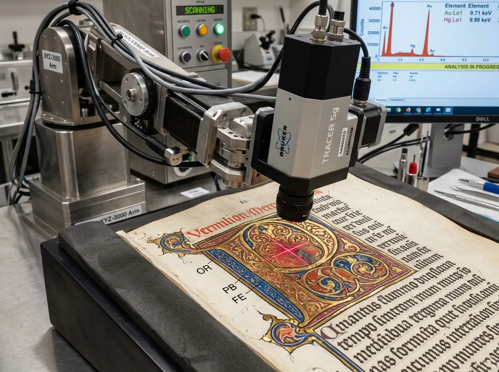

Before any chemical intervention, the manuscript folio undergoes rigorous non-destructive elemental profiling. We utilize an automated micro-X-ray fluorescence (micro-XRF) spectrometer with a focused 50-micron polycapillary optic to map transition metal spatial distributions across affected letters.
The sensor scans iron (Fe), copper (Cu), and zinc (Zn) atomic molar ratios, determining the precise stoichiometric excess of reactive ferrous ions present in the ink. Concurrently, baseline spectrophotometric reflectance and micro-tensile data are logged into the collection record.
- Spatial Resolution: 50 µm spot diameter
- Elemental Sensitivity: <5 ppm transition metals
- Substrate Impact: 0.00% physical sampling required
